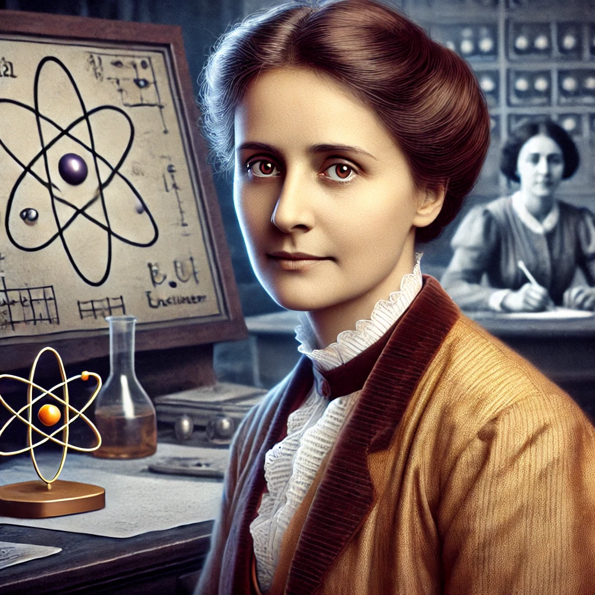

Lise Meitner, an Austrian physicist, co-discovered nuclear fission—the process that powers nuclear reactors and bombs. However, her male colleague, Otto Hahn, received the Nobel Prize in Chemistry (1944) while Meitner was ignored. She later became known as the “Mother of the Atomic Bomb”, despite opposing its use.